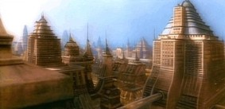

Angosia III |
|
||||
|  |
| Classe | M |
Angosia è entrato nella Federazione nel 2366.
Il governo angosiano in quel periodo stava attraversando un difficile periodo
dovuto alla reintegrazione di alcuni veterani della guerra tarsiana.
A poca distanza dal pianeta vi è una serie di asteroidi di buone dimensioni,
tra cui Lunar V, sede di un carcere di massima sicurezza.